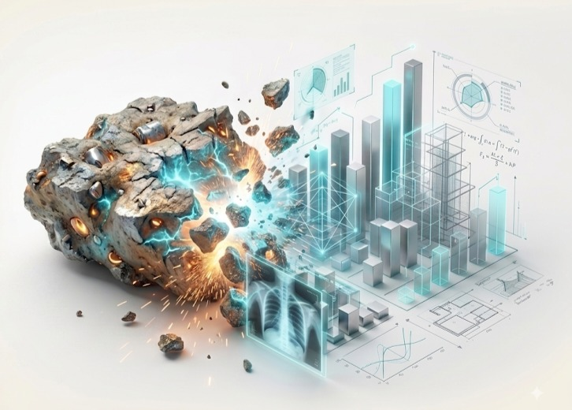

Первый промышленный объект — в стадии подготовки.
Мы предлагаем не список построенных объектов, а метод: на каждом этапе видно, на каких данных принято решение, и любой этап можно остановить.

R. Keren работает с промышленными материалами: шлак, шлам, отвалы вторичного металлургического производства.
Мы не поставляем оборудование и не продаём готовые технологические линии. Наша работа начинается с материала клиента, а не с каталога.

Определяем, можно ли переработать материал и получить из него продукт.
Подбираем решение и оборудование под конкретный материал, без привязки к производителям.
Координируем инженерную часть проекта и поставки разных производителей.
Сопровождаем реализацию на площадке.

Испытания материала проводит сторона, не связанная с поставками оборудования, — чтобы цифры, на которых строится решение, не зависели от того, кто это оборудование продаёт. Своей лаборатории у нас нет: испытания выполняет независимая лаборатория по программе, которую мы составляем под конкретный материал.
Разделы документации, которые по законам страны проекта требуют местной правоспособности или подписи, оформляет организация в стране проекта — существующий проектировщик клиента, подрядчик предприятия или организация, привлечённая под проект. Мы не навязываем клиенту своего проектировщика: выбор остаётся за вами.
Данные о материале → предварительная оценка → испытания → оценка экономики → решение и инженерия → реализация
После каждого этапа решение о продолжении принимаете вы.
Если по данным материала переработка не имеет смысла, мы говорим об этом прямо и останавливаемся на этом этапе.


Мы скажем, есть ли смысл двигаться дальше.
Отправить данные о материале